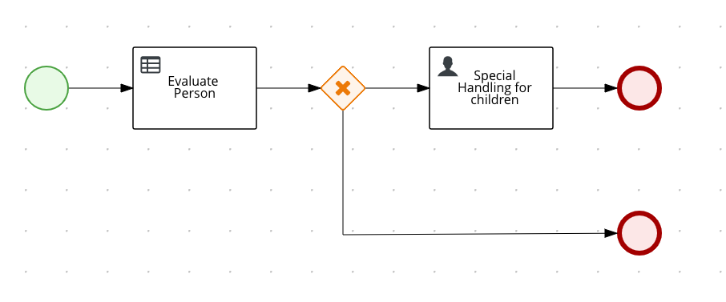

Quarkus - Using Kogito to add business automation capabilities to an application
このガイドでは、QuarkusアプリケーションがKogitoを使用してビジネスオートメーションを追加し、ビジネスプロセスとルールでパワーアップする方法を説明します。
Kogitoは、有名なオープンソースプロジェクトであるDrools (ビジネスルール用)とjBPM (ビジネスプロセス用)から生まれた次世代のビジネスオートメーションツールキットです。Kogitoは、ビジネスナレッジ(プロセス、ルール、意思決定)をドメイン固有の方法で公開することを主なメッセージとするビジネスオートメーションへの別のアプローチを提供することを目的としています。
|
この技術は、previewと考えられています。 とりうるエクステンションステータスの完全なリストについては、 FAQの項目を 参照してください。 |
前提条件
このガイドを完成させるには、以下が必要です:
-
less than 15 minutes
-
IDE (BPMN モデラープラグインを使用したEclipseが望ましい)
-
JDK 1.8+ がインストールされ、
JAVA_HOMEが適切に設定されていること -
Apache Maven 3.6.2+
-
Docker
モデリングプラグインをIDEにインストールする
Kogito Toolingは現在EclipseとVSCodeでサポートされています。
-
Eclipse
プロセスのビジュアルモデリングを利用するには、Eclipse IDEをダウンロードし、マーケットプレイスからEclipse BPMN2 Modellerプラグイン(jBPMランタイムエクステンション付き)をインストールします。
-
VSCode
Kogito Toolingのリリースページ からVSCode Extensionをダウンロードしてインストールすると、VSCode IDEからプロセス定義を編集してモデル化することができます。
-
Online
モデラーのインストールを避けるために、 BPMN.new を直接使用して、お気に入りのWebブラウザを使ってプロセスの設計とモデリングを行うことができます。
アーキテクチャ
ソリューション
We recommend that you follow the instructions in the next sections and create the application step by step. However, you can go right to the complete example.
Gitレポジトリをクローンするか git clone https://github.com/quarkusio/quarkus-quickstarts.git 、
アーカイブ をダウンロードします。
ソリューションは kogito-quickstart
ディレクトリ にあります。
Creating the Maven Project
まず、新しいプロジェクトが必要です。以下のコマンドで新規プロジェクトを作成します。
mvn io.quarkus:quarkus-maven-plugin:1.7.6.Final:create \
-DprojectGroupId=org.acme \
-DprojectArtifactId=kogito-quickstart \
-Dextensions="kogito"
cd kogito-quickstartこのコマンドは、アプリケーションにビジネスオートメーションを装備するために必要なすべての依存関係と設定を含む kogito
エクステンションをインポートして、Maven プロジェクトを生成します。
すでにQuarkusプロジェクトが設定されている場合は、プロジェクトのベースディレクトリーで以下のコマンドを実行することで、プロジェクトに
kogito エクステンションを追加することができます。
./mvnw quarkus:add-extension -Dextensions="kogito"これにより、 pom.xml に以下が追加されます:
<dependency>
<groupId>org.kie.kogito</groupId>
<artifactId>kogito-quarkus</artifactId>
</dependency>アプリケーションの記述
まずはシンプルなデータオブジェクト Person を実装してみましょう。下のソースコードを見ればわかるように、ただのPOJOです。
package org.acme.kogito.model;
public class Person {
private String name;
private int age;
private boolean adult;
public String getName() {
return name;
}
public void setName(String name) {
this.name = name;
}
public int getAge() {
return age;
}
public void setAge(int age) {
this.age = age;
}
public boolean isAdult() {
return adult;
}
public void setAdult(boolean adult) {
this.adult = adult;
}
@Override
public String toString() {
return "Person [name=" + name + ", age=" + age + ", adult=" + adult + "]";
}
}Next, we create a rule file person-rules.drl inside the
src/main/resources/org/acme/kogito folder of the generated project.
package org.acme.kogito
import org.acme.kogito.model.Person;
rule "Is adult" ruleflow-group "person"
when
$person: Person(age > 18)
then
modify($person) {
setAdult(true)
};
endThis is really a simple rule that marks a person who is older that 18 years as an adult.
Finally we create a business process that will make use of this rule and
some other activities to approve a given person. Using new item wizard (File
→ New → Other → BPMN2 Model) create persons.bpmn inside
src/main/resources/org/acme/kogito folder of the generated project.
This process should consist of
-
start event
-
business rule task
-
exclusive gateway
-
user task
-
end events
And should look like

To get started quickly copy the process definition from the quickstart
To model this process yourself, just follow these steps (start event should be automatically added)
-
define a process variable with name
personof typeorg.acme.kogito.model.Person -
drag the Tasks → Business Rule Task from the palette and drop it next to start event, link it with start event
-
double click on the business rule task
-
on tab I/O Parameters, set data input and output (map
personprocess variable to input data with namepersonand same for data output) -
on tab Business Rule Task, set rule flow group to the value defined in the drl file (
person)
-
-
-
drag the Gateways → XOR gateway from the palette and drop it next to the business rule task, link it with rule task
-
drag the Tasks → User Task from the palette and drop it next to the gateway, link it with gateway
-
double click on the user task
-
on tak User Task, set task name to
ChildrenHandling -
on tab I/O Parameters, set data input (map
personprocess variable to input data with nameperson)
-
-
-
drag the End Events → End from the palette and drop it next to the user task, link it with the user task
-
drag the End Events → End from the palette and drop it next to the gateway, link it with the user task
-
double click on the gateway
-
on tab Gateway, set the diverging direction for the gateway
-
on tab Gateway, set conditions on sequence flow list
-
→ going to end event
return person.isAdult() == true;with languageJava -
→ going to user task
return person.isAdult() == false;with languageJava
-
-
-
save the file
アプリケーションの実行と使用
Running in JVM Mode
"dev-mode" で遊び終わったら、標準のJavaアプリケーションとして実行することができます。
まずコンパイルします。
./mvnw package次に、以下を実行してください。
java -jar ./target/kogito-quickstart-runner.jarネイティブモードでの実行
同じデモをネイティブコードにコンパイルすることができます。
これは、生成されたバイナリーにランタイム技術が含まれており、最小限のリソースオーバーヘッドで実行できるように最適化されているため、本番環境にJVMをインストールする必要がないことを意味します。
コンパイルには少し時間がかかるので、このステップはデフォルトで無効になっています。 native プロファイルを有効にして再度ビルドしてみましょう。
./mvnw package -Dnativeコーヒーを飲み終わると、このバイナリーは以下のように直接実行出来るようになります:
./target/kogito-quickstart-runnerアプリケーションのテスト
To test your application, just send request to the service with giving the person as JSON payload.
curl -X POST http://localhost:8080/persons \
-H 'content-type: application/json' \
-H 'accept: application/json' \
-d '{"person": {"name":"John Quark", "age": 20}}'In the response, the person should be approved as an adult and that should also be visible in the response payload.
{"id":"dace1d6a-a5fa-429d-b253-d6b66e265bbc","person":{"adult":true,"age":20,"name":"John Quark"}}You can also verify that there are no more active instances
curl -X GET http://localhost:8080/persons \
-H 'content-type: application/json' \
-H 'accept: application/json'To verify the non adult case, send another request with the age set to less than 18
curl -X POST http://localhost:8080/persons \
-H 'content-type: application/json' \
-H 'accept: application/json' \
-d '{"person": {"name":"Jenny Quark", "age": 15}}'this time there should be one active instance, replace {uuid} with the id
attribute taken from the response
curl -X GET http://localhost:8080/persons/{uuid}/tasks \
-H 'content-type: application/json' \
-H 'accept: application/json'You can get the details of the task by calling another endpoint, replace
uuids with the values taken from the responses (uuid-1 is the process
instance id and uuid-2 is the task instance id). First corresponds to the
process instance id and the other to the task instance id.
curl -X GET http://localhost:8080/persons/{uuid-1}/ChildrenHandling/{uuid-2} \
-H 'content-type: application/json' \
-H 'accept: application/json'You can complete this person evaluation process instance by calling the same
endpoint but with POST, replace uuids with the values taken from the
responses (uuid-1 is the process instance id and uuid-2 is the task
instance id).
curl -X POST http://localhost:8080/persons/{uuid-1}/ChildrenHandling/{uuid-2} \
-H 'content-type: application/json' \
-H 'accept: application/json' \
-d '{}'永続化を有効にする
Kogito の 0.3.0 以降、アプリケーションの再起動時にプロセスインスタンスの状態を保持するために永続性を有効にするオプションがあります。これにより、いつでも再開できる長時間稼働しているプロセスインスタンスをサポートします。
前提条件
Kogitoでは、永続化サービスとしてInfinispanを使用しているため、Infinispanサーバーがインストールされている必要があります。InfinispanのバージョンはQuarkusのBOMに合わせているので、正しいバージョンがインストールされていることを確認してください。
プロジェクトに依存関係を追加する
<dependency>
<groupId>io.quarkus</groupId>
<artifactId>quarkus-infinispan-client</artifactId>
</dependency>
<dependency>
<groupId>org.kie.kogito</groupId>
<artifactId>infinispan-persistence-addon</artifactId>
<version>${kogito.version}</version>
</dependency>Configure connection with Infinispan server
src/main/resources/application.propertiesファイルに以下を追加します(存在しない場合は作成してください)。
quarkus.infinispan-client.server-list=localhost:11222| Infinispan サーバーのインストールに合わせて、ホストとポート番号を調整します。 |
永続性を有効にしたテスト
プロジェクト レベルで永続性を設定した後、アプリケーションの再起動時にプロセス インスタンスの状態が保持されているかどうかをテストして確認できます。
-
Infinispan サーバーを起動する
-
build and run your project
-
execute non adult use case
curl -X POST http://localhost:8080/persons \
-H 'content-type: application/json' \
-H 'accept: application/json' \
-d '{"person": {"name":"Jenny Quark", "age": 15}}'アクティブなインスタンスがあることを確認することもできます。
curl -X GET http://localhost:8080/persons \
-H 'content-type: application/json' \
-H 'accept: application/json'Infinispan サーバーを稼働させている間にアプリケーションを再起動します。
全く同じ ID を持つアクティブなインスタンスが表示されているかどうかを確認します。
curl -X GET http://localhost:8080/persons \
-H 'content-type: application/json' \
-H 'accept: application/json'Kogito の永続化について詳しく知りたい方は こちらのページ をご覧ください。